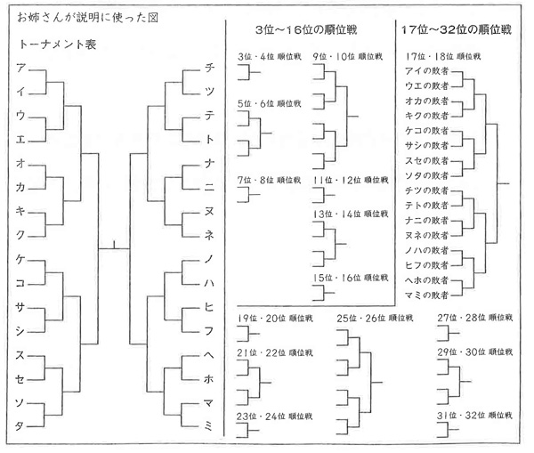
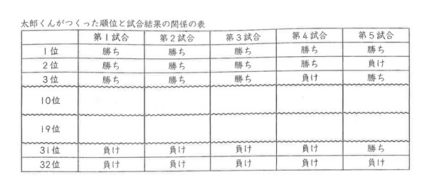

公立一貫校の検査問題とは？
ここ数年でブームになっている公立の中高一貫校。
試験の内容が私立中学のそれとは違うため、名称も「入学試験」ではなく「適性検査」といいます。
私立中学の試験問題は、どちらかというと高校受験の前倒し的な内容で、特に算数などは‘鶴亀算’‘流水算’など、「こういうタイプの問題はこうやって解く」などパターン暗記と訓練をいかに徹底してきたかがカギになる試験です。
まあ個人的には小学生の頃にそのような作業タイプの勉強を数多く課すのは反対です。
しかし公立の一貫校の検査問題は、その場でいかに考えるかがポイントになるような問題です。
資料と会話文から状況を正確に読み取ったり、理由を記述したり、その場で試行錯誤できるかどうかを試すものが多いので、対策をするにしても「日ごろから物事をじっくり考える」というものになるわけです。
そういうわけで、このようなタイプの問題に適応する力をつける訓練や、そのような思考力がある人物を欲している学校へ行くことは、小学生にとって悪くないなと思うわけです。
例えばこんな問題を普通に考えてみる
さて、検査の問題には「資料の読み取りと記述」が中心の検査と、「数理的問題」が中心のものがあります。
今回は数理的問題の中から、さいたま市立浦和中学の過去問を紹介します。
これについて(1)～(2)に答えなさい。(1) 太郎くんは、トーナメント戦によって、出場選手すべての順位を決定する方法に興味を持ちました。太郎くんは、「お姉さんの説明」をもとにして、「順位と試合結果の関係の表」をつくりました。太郎くんのつくった「順位と試合結果の関係の表」の中の、10位の選手と19位の選手の第1試合から第5試合までの「勝ち」または「負け」はどちらですか。
空欄にあてはまるものを考え、「勝ち」または「負け」で答えなさい。
例えば、32人の選手がいるとします。次の図のように勝った選手は勝った選手どうし、負けた選手は負けた選手どうしで、次々に試合を行うことにします。この方法を進めると、どの選手も必ず5試合することになります。そして、5試合の「勝ち」または「負け」の結果から、32人すべての選手に1位から32位までの順位をつけることができます。ただし、どの試合も引き分けはないものとします。


さて、なかなか面倒な設定ですね（苦笑）。
数理的な要素の問題でありながら、どんなルールなのかを把握する読解力も要求されます。
ルールですが、要するに毎回の試合で勝った人と負けた人を分け、勝てばそのトーナメントを勝ち進み、負けたら負け組で新たなトーナメントを組むという流れです。
そしてその勝ち負け表によって順位決めをするのです。
例えば２回戦まで順調に勝って（ベスト8に入る）、３回戦目で負けた（ベスト4には残れなかったので5～8位のどれかが決定）場合は、そこで負けた４人でまたトーナメントを始めるということです。
ひとまず頭の中だけで考えていたら時間ばかりが過ぎそうですね。
いかに‘手を動かして’‘試行錯誤’するかがポイントになります。
さて、とりあえず普通に10位の人について考えてみましょう。
まず、考えるべきは「１回戦の結果がどうだったか」ということ。
１回戦で勝てばベスト16に入り負ければ17～32位が確定しますから、勝っているはず。
次に２回戦ですが、これに勝てばベスト8です。つまり勝っていてはおかしい。
２回戦には負けて9～16位を確定させなければなりません。
このように考えて10位の人は、「勝ち・負け・勝ち・勝ち・負け」という結果であることが分かります。
ざっくり言えば、試合に勝てばそのグループの上半分に入り、負ければ下半分に入る。自分の順位が決まるまでそれを繰り返す、ということです。
隠されたテーマを発見するのも粋
さて、上記は一般的な解法だと思いますが、少し視点を変えてみましょう。
このルールでの順位の決まり方、実はこのように表現することができると思います。
＜初めて負けるのが後であるほど上位になる＞
どうでしょう。
例えば４回戦まで勝ち上がって、最後の最後で初めて負けた場合は2位です。
初めて負けたのが４回戦で、最終試合に勝てば３位、負ければ４位ですよね。
勝ち＝0、負け＝1として考えれば、これはまさに「二進法」の表記の順番が、ほぼそのまま順位に対応しているじゃあないですか！
（※二進法については、2015/01/07「my法則シリーズ～2015はそこそこﾌﾟﾚﾐｱﾑな数～」を参照して下さい）
‘ほぼ’という表現を使ったのは、１つだけずれてしまうんですよね。
1位になる人…00000（二進法の0）
2位になる人…00001（二進法の1）
3位になる人…00010（二進法の2）
4位になる人…00011（二進法の3）
5位になる人…00100（二進法の4）
10位になる人…01001（二進法の9）
ということで、十進法を二進法に直すことに慣れていたらすぐに出来ますね。
この題材がこういう風に発展するということには、なかなか面白みを感じるところでした。
検査型の問題は、日常の何かを題材にしているものが多く、そこでの発見はまさに日常の何かを数学で具体的に解決することに直結します。
こういうタイプの問題ならではの楽しみといったところでしょうか。
ではまた来週！